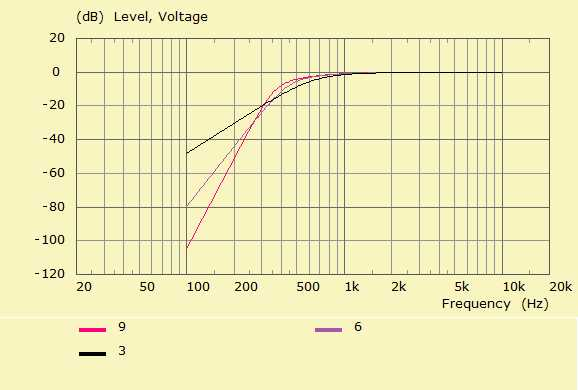

| Identifier | Order= | |
| Format | Integer Value | |
| Purpose | Order of standard filter alignment | |
| Used in | Filter | |

Order= is the degree of the denominator polynomial of the creating low-pass transfer function.A standard filter alignment is only created if Order > 0 in section Filter.
The above example shows the amplitude of a Butterworth-Thomson (BT) highpass of Order=3, Order=6 and Order=9. See Alignment Types.